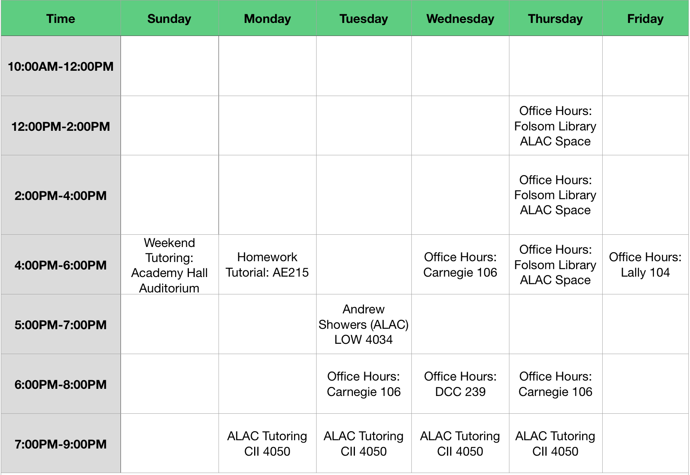

Weekly Office Hours Schedule - Spring 2018¶
Instructor Office Hours¶
- Professor Turner’s office hours are Tuesday, Thursday 2:00 - 3:30 PM in Amos Eaton 207
- Professor Kuzmin’s office hours are Tuesday 4:00 - 5:30 PM in Amos Eaton 127
TA / Mentor / ALAC Hours¶
- AE = Amos Eaton Building
- VCC = Voorhees Computing Center
- S.E. Corner = South East Corner
- CII = George M. Low Center for Industrial Innovation